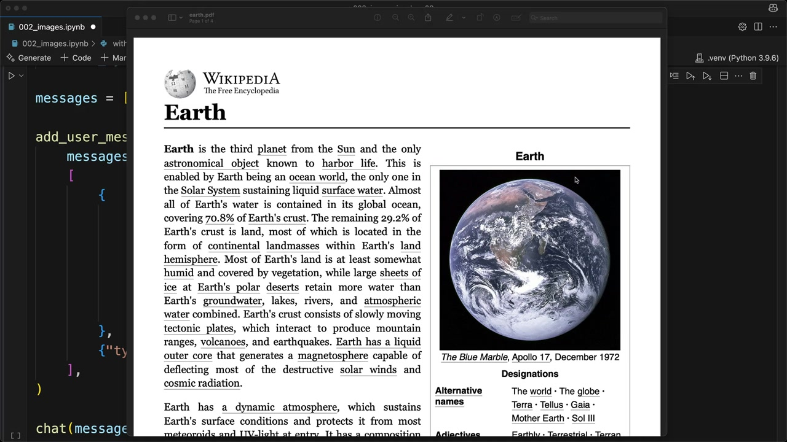
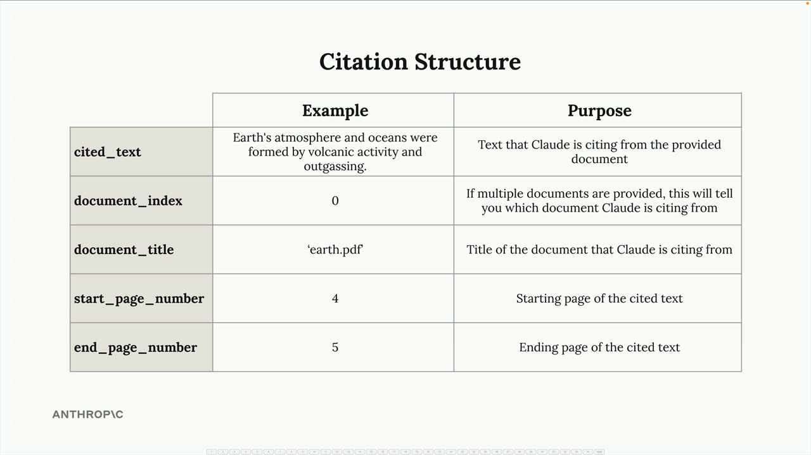
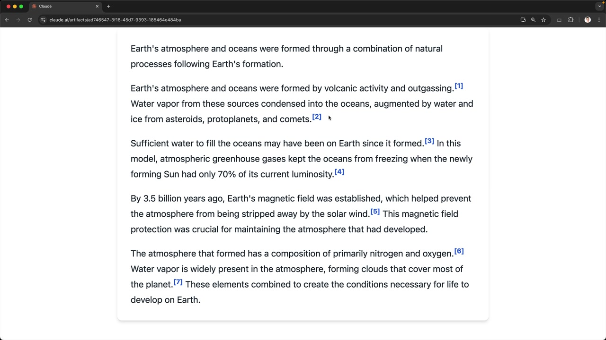

인용
Claude가 제공된 문서를 바탕으로 질문에 답변할 때, 사용자들은 Claude가 단순히 학습 데이터에서 정보를 가져온다고 생각할 수 있습니다. 하지만 Claude가 특정 정보를 어디서 찾았는지 정확히 보여줄 수 있다면 어떨까요? 바로 이것이 인용 기능입니다. 인용은 Claude가 원본 문서의 특정 부분을 참조하고, 각 정보가 어디서 왔는지 사용자에게 정확히 보여줄 수 있게 해주는 강력한 기능입니다.
인용이 중요한 이유
지구 대기가 어떻게 형성되었는지 Claude에게 물어보고 상세한 답변을 받는다고 상상해 보세요. 인용이 없다면, 사용자는 그 정보를 검증하거나 Claude가 실제로 제공된 특정 문서를 참조하고 있다는 것을 알 방법이 없습니다. 인용은 Claude의 응답에서 원본 자료까지 명확한 경로를 만들어 이러한 투명성 문제를 해결합니다.

인용 활성화하기
인용을 활성화하려면 문서 메시지 구조를 수정해야 합니다. 문서 블록에 두 개의 새 필드를 추가하세요:
{
"type": "document",
"source": {
"type": "base64",
"media_type": "application/pdf",
"data": file_bytes,
},
"title": "earth.pdf",
"citations": { "enabled": True }
}
title 필드는 문서에 읽기 쉬운 이름을 부여하고, citations: {"enabled": True}는 Claude에게 정보를 찾은 위치를 추적하도록 지시합니다.
인용 구조 이해하기
인용이 활성화되면 Claude의 응답이 더 복잡해집니다. 단순한 텍스트 대신, 각 주장에 대한 인용 정보를 포함한 구조화된 데이터를 받게 됩니다.

각 인용에는 다음과 같은 몇 가지 핵심 정보가 포함됩니다:
- cited_text - Claude의 진술을 뒷받침하는 문서의 정확한 텍스트
- document_index - Claude가 참조하는 문서 (여러 문서를 제공할 때 유용)
- document_title - 문서에 지정한 제목
- start_page_number - 인용된 텍스트가 시작되는 위치
- end_page_number - 인용된 텍스트가 끝나는 위치
인용을 활용한 사용자 인터페이스 구축
인용의 진정한 강점은 이 정보를 접근 가능하게 만드는 사용자 인터페이스를 구축하는 데 있습니다. 사용자가 인용 마커 위에 마우스를 올려 정보가 어디서 왔는지 정확히 확인할 수 있는 인터랙티브 요소를 만들 수 있습니다.

이를 통해 사용자가 다음을 할 수 있는 투명한 경험을 제공합니다:
- Claude의 답변이 실제 원본 자료에 기반하고 있음을 확인
- 원본 문서를 확인하여 정보 검증
- 인용된 각 정보의 맥락 파악
일반 텍스트에서의 인용
인용은 PDF 문서에만 국한되지 않습니다. 일반 텍스트 소스에도 사용할 수 있습니다. 텍스트를 사용할 때는 다음과 같이 문서 구조를 수정하세요:
{
"type": "document",
"source": {
"type": "text",
"media_type": "text/plain",
"data": article_text,
},
"title": "earth_article",
"citations": { "enabled": True }
}일반 텍스트 소스를 사용하면 페이지 번호 대신 문자 위치를 받게 되며, 이를 통해 Claude가 텍스트의 어느 위치에서 각 정보를 찾았는지 정확히 파악할 수 있습니다.
인용을 사용해야 할 때
인용은 특히 다음과 같은 경우에 유용합니다:
- 사용자가 정확성을 위해 정보를 검증해야 할 때
- 사용자가 참조할 수 있어야 하는 권위 있는 문서를 다룰 때
- 애플리케이션에서 정보 출처의 투명성이 중요할 때
- 사용자가 특정 사실 주변의 더 넓은 맥락을 탐색하고 싶을 때
인용을 구현함으로써 Claude를 단순히 답변을 제공하는 "블랙박스"에서 자신의 작업을 보여주는 투명한 연구 보조자로 변환할 수 있습니다. 이는 사용자 신뢰를 구축하고, 필요할 때 원본 자료를 더 깊이 탐색할 수 있게 해줍니다.